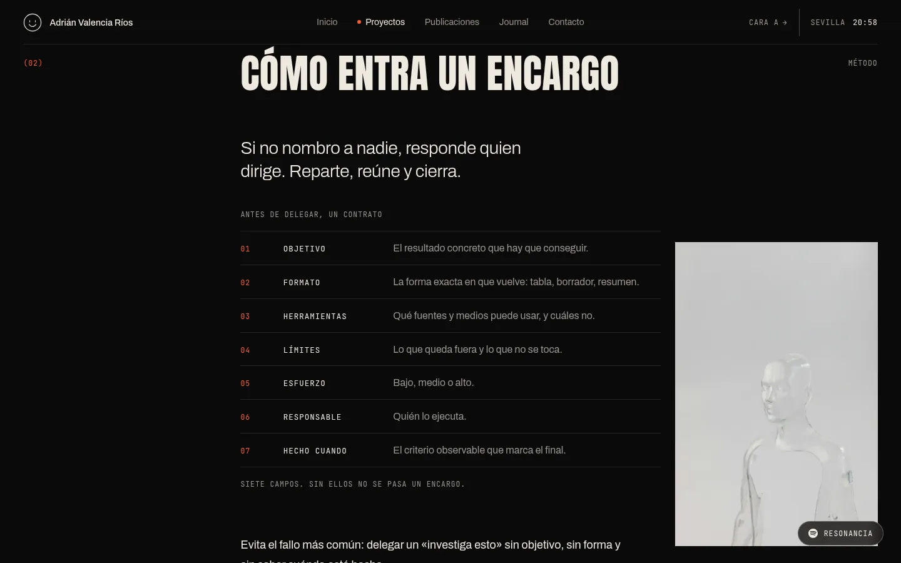
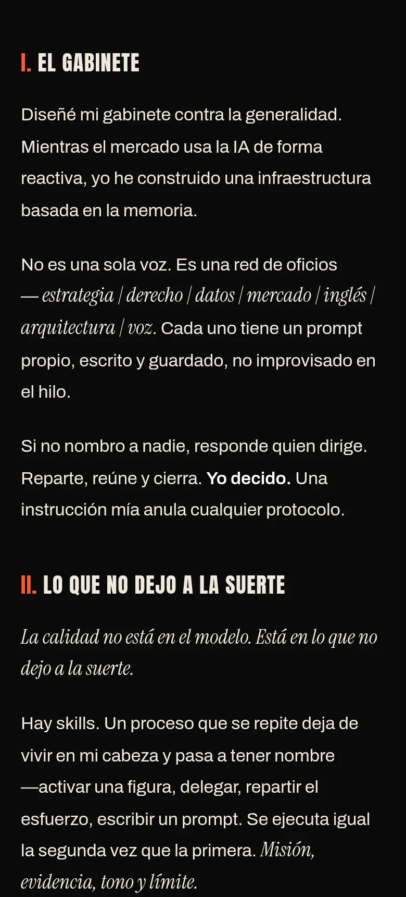
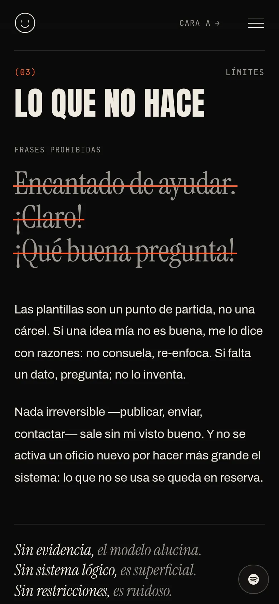

Proyectos / 02 — TECH
Gabinete — IA
Por qué existe
CriterioLa IA me ha ayudado a potenciar mis decisiones, mis ideas. He alcanzado mejores versiones de quien ya era.
No uso la IA como un chat que se olvida al cerrarse. La he convertido en un sistema con memoria, reglas y límites.
Lo fijé al empezar: el experto humano final soy yo. La IA propone y pone a prueba; si hay un conflicto fundamentado, cuenta mi corrección.
Primeras decisiones12 de octubre de 2025
Cómo trabaja
MétodoSi no nombro a nadie, responde quien dirige. Reparte, reúne y cierra.
Cada oficio tiene su instrucción escrita y guardada, no improvisada en la conversación. Si a mitad de camino el trabajo es de otro, se para y se deriva, con destino y motivo en una línea.
Derivación: destino — motivo
Las plantillas son un punto de partida, no una cárcel. Si una idea mía no es buena, me lo dice con razones. Si falta un dato, pregunta; no lo inventa. Y el relleno está prohibido:
Encantado de ayudar.¡Claro!¡Qué buena pregunta!
Yo decido. Una instrucción mía anula cualquier protocolo, y nada irreversible —publicar, enviar, contactar— sale sin mi visto bueno.

El encargo
DocumentoAsí se pasa cualquier encargo. Este es el de esta sección.
Encargo · Gabinete — IANoviembre de 2026
- Objetivo
- Contar qué es el gabinete y qué ha salido de él.
- Formato
- Una sección de esta web, compuesta para móvil y para escritorio.
- Herramientas
- La web publicada y el archivo del propio sistema.
- Límites
- Nada privado. Ningún eslogan. Ninguna foto recortada.
- Esfuerzo
- Alto.
- Responsable
- El oficio de web. El texto lo cierro yo.
- Hecho cuando
- La veo dentro de la web y le doy mi visto bueno.
Siete campos. Sin ellos, no se delega.
Una misión real
Esta secciónEsta sección ha seguido el mismo camino que cualquier cambio en la web.
- 01
Encargo
El documento de arriba.
- 02
Especificación
Primero el contenido: una tesis y seis partes, cada una con su fuente.
Escaleta
TesisLa IA me ha ayudado a potenciar mis decisiones, mis ideas.
- 01Por qué existe
- 02Cómo entra un encargo
- 03Lo que no hace
- 04Una misión real
- 05Lo que ha salido
- 06Memoria y escala
- 03
Vista previa
Una primera versión, en un enlace aparte, para leerla dentro de la web.

Primera vista previa · escritorio - 04
Visto bueno
No lo di a la primera. Pedí otra versión, en otro enlace, para comparar.

Publicada 
Primera vista previa - 05
Publicar
Solo con mi visto bueno. Si lees esto, lo di.
Lo que ha salido
ResultadosCada uno de estos trabajos lo he cerrado yo.
- 01WebDos caras, una profesional y esta. Diseñadas, construidas y mantenidas con el gabinete.adrianvalencia.es
- 02LinkedInSupervisado y asesorado de forma creativa, y alineado con esta web y con la marca personal. El gabinete figura en él como proyecto.Perfil
LinkedIn · Proyectos
AI Agents | Gabinete multiagente de IA
2025 — act.
Ver el perfil (se abre en una pestaña nueva)«Sistema personal, en uso real. Su arquitectura lo distingue: varios agentes, una memoria común y una persona que conserva la decisión».
- 03CurrículumReescrito y optimizado con el gabinete.CV
- 04GradoRelaciones Laborales y Recursos Humanos, Universidad de Sevilla. Apliqué agentes de IA al estudio: sobresaliente en diversas asignaturas y todas aprobadas.Estudio
- 05FormaciónRutas propias, con fecha y motivo: Python aplicada a recursos humanos y People Analytics, y la preparación del APTIS C1.En curso
- 06Hoja de rutaDiecisiete decisiones registradas, cada una con su porqué: qué estudiar, qué priorizar, hacia dónde ir.Decisiones
- 07SectorRutinas que corren solas: siguen lo que se mueve en el sector y ordenan cada día el correo y la agenda.Activas
Memoria y escala
SistemaNo empieza de cero: lo decidido queda fechado y se lee en un orden fijo antes de opinar.
La criba
- 771archivos de agentes, instrucciones y comandos, en 14 repositorios
- 691únicos sin duplicados
- 66roles en reserva, en 19 sectores
Un rol solo sale de la reserva si se usa, y ese paso lo apruebo yo.
- 15figurasNueve en uso, dos a prueba y cuatro aparcadas a propósito.
- 6protocolosComunes a todas: fuentes, estilo, orden y registro.
- 49procedimientosEscritos y con nombre. Se ejecutan igual la segunda vez.
La palabra, el criterio y la dirección son míos.
El proyecto en LinkedIn (se abre en una pestaña nueva)Ver la Cara A